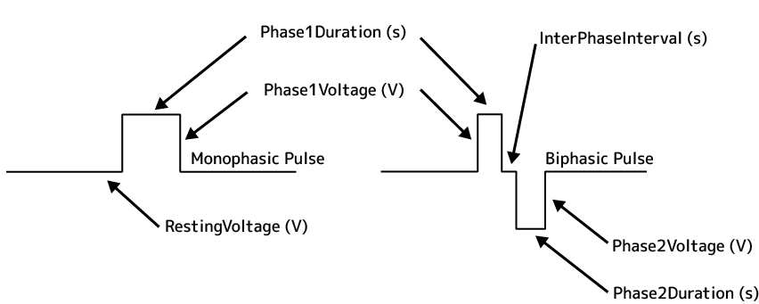
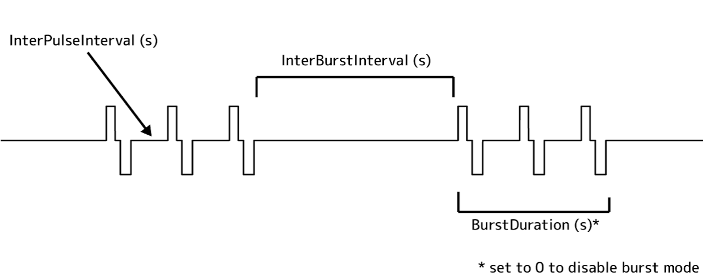
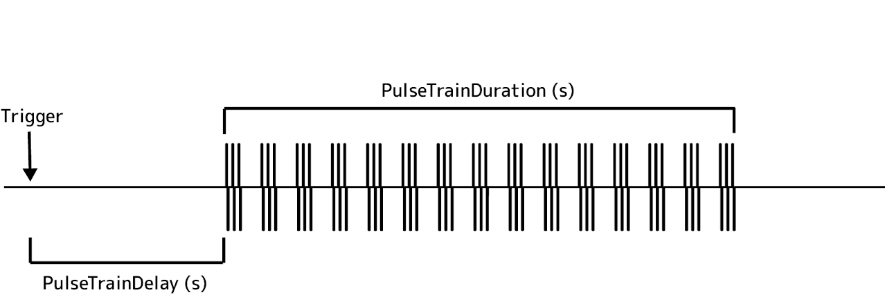

Programming Pulse Trains
Pulse trains can be programmed by configuring the output channel properties in either the CreatePulsepal or ConfigureOutputChannel operators. Using the Pulse Pal terminology, pulse trains are built hierarchically from sequences of pulses and bursts. The following sections will detail step by step how to configure the parameters for each in Bonsai. Additional information on these parameters can be found on the Pulse Pal Parameter Guide.
Pulse parameters
Pulses can either be monophasic pulses or biphasic. The time course of a pulse is governed by several parameters as shown in the image below.

(Image reproduced from the Pulse Pal Wiki)
For monophasic pulses, set the properties that are outlined in the table below.
| Category | Property Name | Value | Description |
|---|---|---|---|
| Pulse Timing | Phase1Duration |
0.0001 - 3600 (secs) | The duration for the first phase of each pulse. |
| Pulse Voltage | Biphasic |
True/False | Set to False for monophasic pulses. |
| Pulse Voltage | Phase1Voltage |
-10 - +10 (V) | The voltage for the first phase of each pulse. |
For biphasic pulses, set these additional properties.
| Category | Property Name | Value | Description |
|---|---|---|---|
| Pulse Timing | InterPhaseInterval |
0 - 3600 (secs) | The interval between the first and second phase of a biphasic pulse. |
| Pulse Timing | Phase2Duration |
0.0001 - 3600 (secs) | The duration of the second phase of the pulse. |
| Pulse Voltage | Biphasic |
True/False | Set to True for biphasic pulses. |
| Pulse Voltage | Phase2Voltage |
-10 - +10 (V) | The voltage for the second phase of each pulse. |
Note
If Biphasic is set to false, the InterPhaseInterval, Phase2Duration and Phase2Voltage properties are ignored.
Burst parameters
Pulses can be grouped together into bursts, which have the following parameters.

(Image reproduced from the Pulse Pal Wiki)
| Category | Property Name | Value | Description |
|---|---|---|---|
| Pulse Timing | BurstDuration |
0 - 3600 (secs) | The duration of a pulse burst. |
| Pulse Timing | InterBurstInterval |
0.0001 - 3600 (secs) | The duration of the off-time between bursts. |
| Pulse Timing | InterPulseInterval |
0.0001 - 3600 (secs) | The interval between pulses. |
Tip
To disable burst mode and enable a continuous sequence of pulses, set the InterPulseInterval property to your desired value but set the BurstDuration property to 0.
Train parameters
A pulse train of pulses and bursts can be additionally configured with the parameters below.

(Image reproduced from the Pulse Pal Wiki)
| Category | Property Name | Value | Description |
|---|---|---|---|
| Pulse Timing | PulseTrainDelay |
0.0001 - 3600 (secs) | The delay to start the pulse train. |
| Pulse Timing | PulseTrainDuration |
0.0001 - 3600 (secs) | The duration of the pulse train. |
Pulse train playback settings
Besides setting the output channel to playback the pulse train from with the Channel property in either the the CreatePulsepal or ConfigureOutputChannel operators, the ContinuousLoop property can be used to control if the pulse train on the output channel is played back continuously when triggered or only played once.